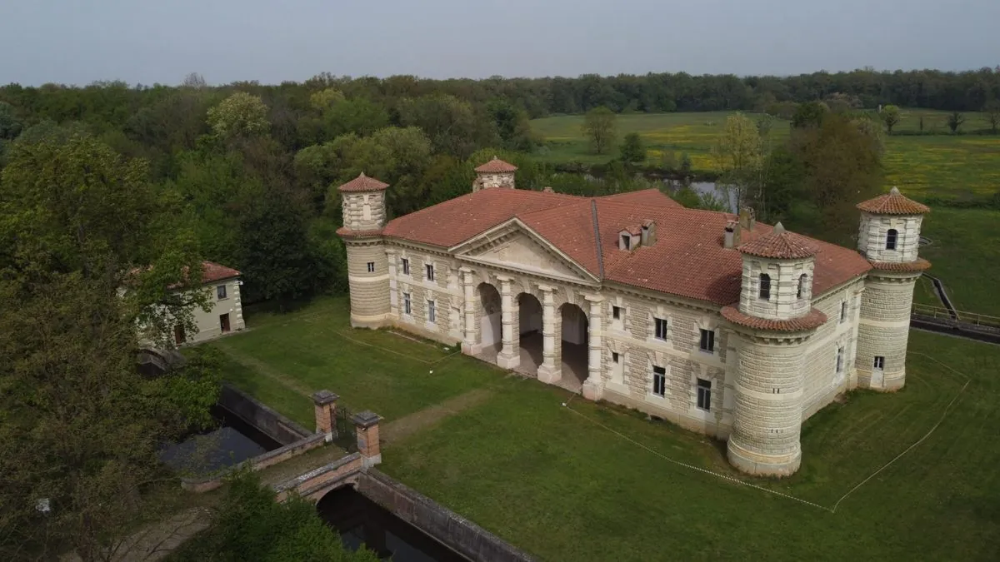
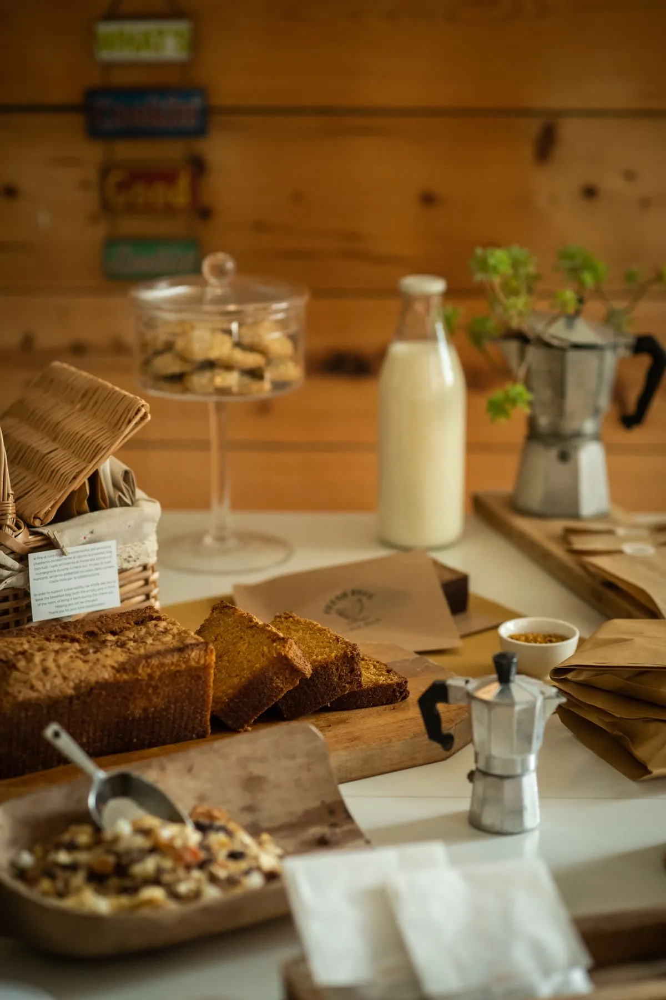
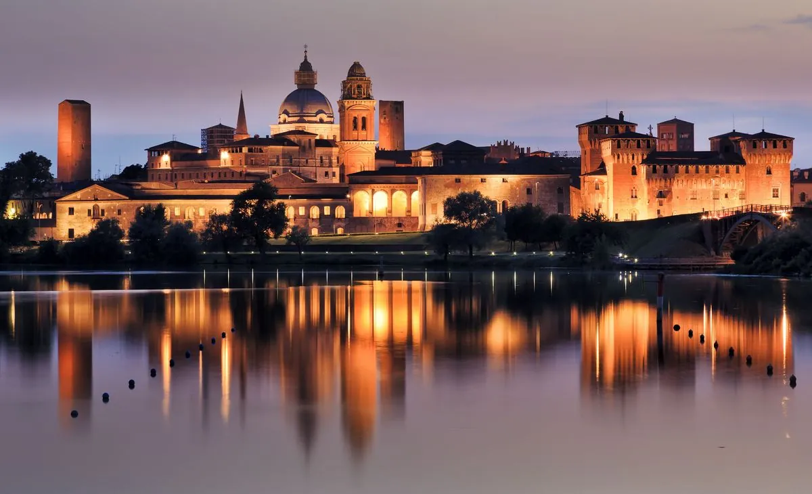
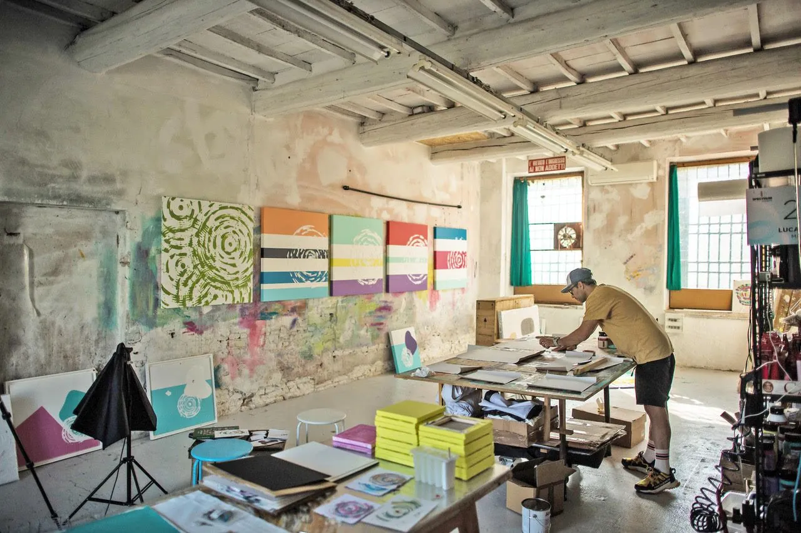
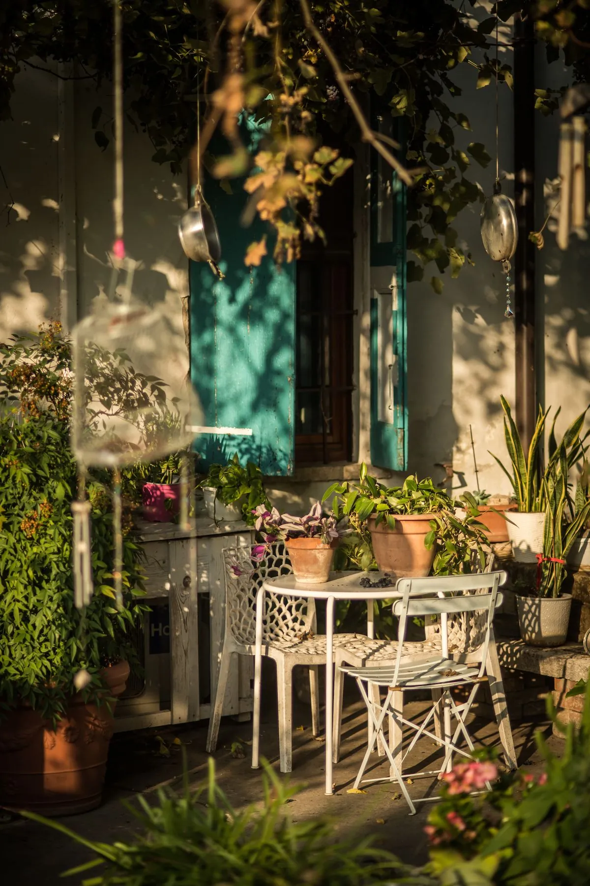

The Beatilla journal
Articles
The land between Mantua and Lake Garda told by the people who live it: routes, seasons, food and country life.
 The area
The area
Mantua to Peschiera by bike: the Mincio cycle path
Forty-five mostly flat kilometres along the river, from the lakes of Mantua to the Venetian walls on Lake Garda.
Read article
The areaBosco della Fontana: the Gonzaga forest
One of the last great lowland forests, with the hunting lodge at its heart. From Beatilla, you walk there.
Read article The area
The area
Borghetto sul Mincio: the village of watermills
Medieval watermills with their feet in the river, the Visconti bridge and the «love knot» tortellini.
Read article
The tablePumpkin tortelli and sbrisolona: Mantua in two bites
A sweet-savoury first course born in the Gonzaga courts, and a cake you break with your hands.
Read article
The areaThe Mincio by boat: Mantua seen from the water
Three lakes embrace the city of the Gonzaga: boat trips, herons, and the lotus flowers in summer.
Read article
The artSleeping in an art gallery: the Circles of Life
Beatilla was founded by an artist and decorated piece by piece: a night inside a collection.
Read article Family
Family
A farm stay with children: the perfect day
Animals, a forest on foot, a garden to play in — and Gardaland half an hour away for the finale.
Read article
HospitalityGlamping and farm stays: nature without giving things up
The word is new, the desire is old: waking up in the green without giving up beauty.
Read article